Siempre las mismas ideas
Quieres variar sin recurrir a ingredientes difíciles de encontrar.
Un recetario para personas adultas que usan tirzepatida con acompañamiento profesional y buscan más ideas para cocinar. Descubre 44 recetas ilustradas con ingredientes medidos, preparación paso a paso y sabores familiares en México.
Guía culinaria educativa. No sustituye un plan de alimentación individual ni las indicaciones de tu médico o nutriólogo.
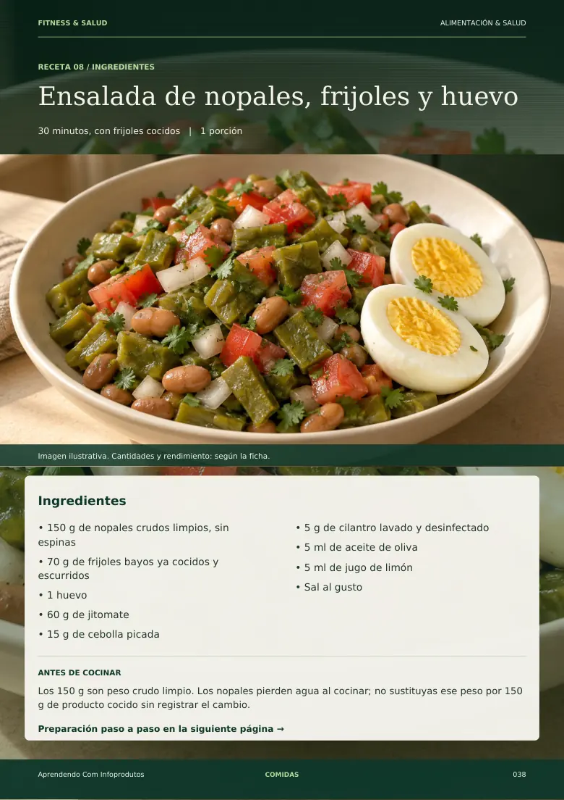
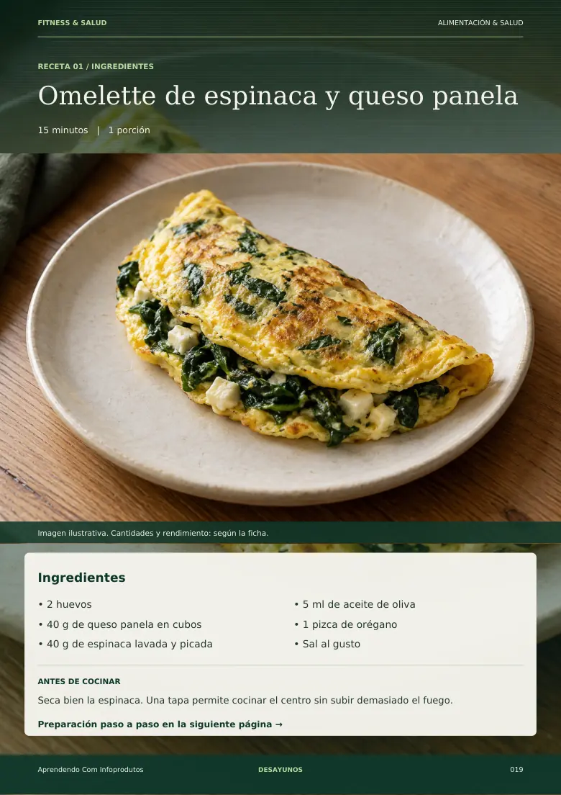
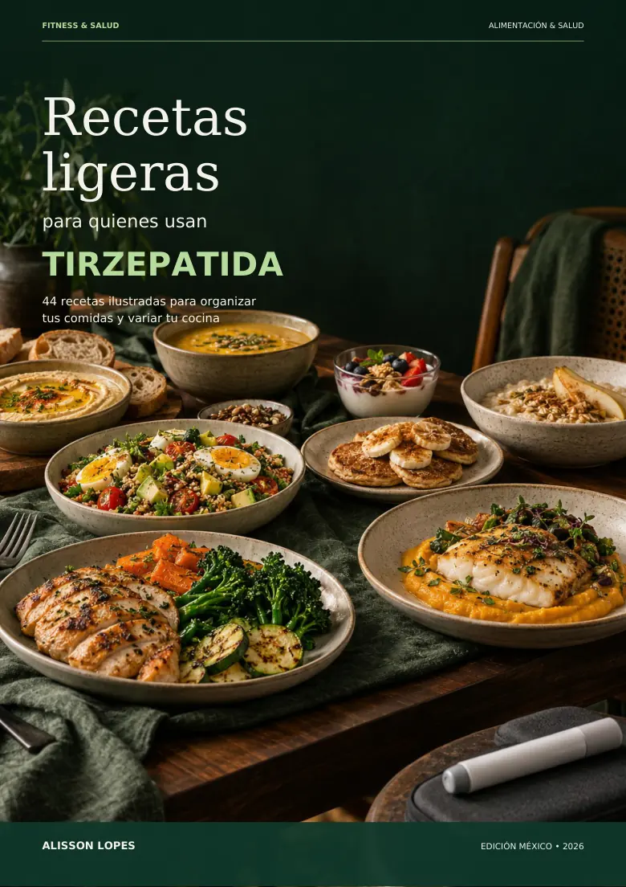
Una receta bien explicada puede ayudarte a decidir qué cocinar, qué comprar y cómo organizar el tiempo.
Quieres variar sin recurrir a ingredientes difíciles de encontrar.
Una pizca de esto y un poco de aquello hacen difícil repetir lo que salió bien.
Preparaciones sin orden claro, que te hacen improvisar en plena cocina.
Tienes platos sueltos, pero te faltan ideas para organizar varios días.
Estas son páginas exportadas directamente de la edición mexicana de 119 páginas. Cada fotografía de alimento forma parte de la ilustración editorial del libro; no corresponde a una prueba culinaria documentada.
Ingredientes claros y fotografía editorial.
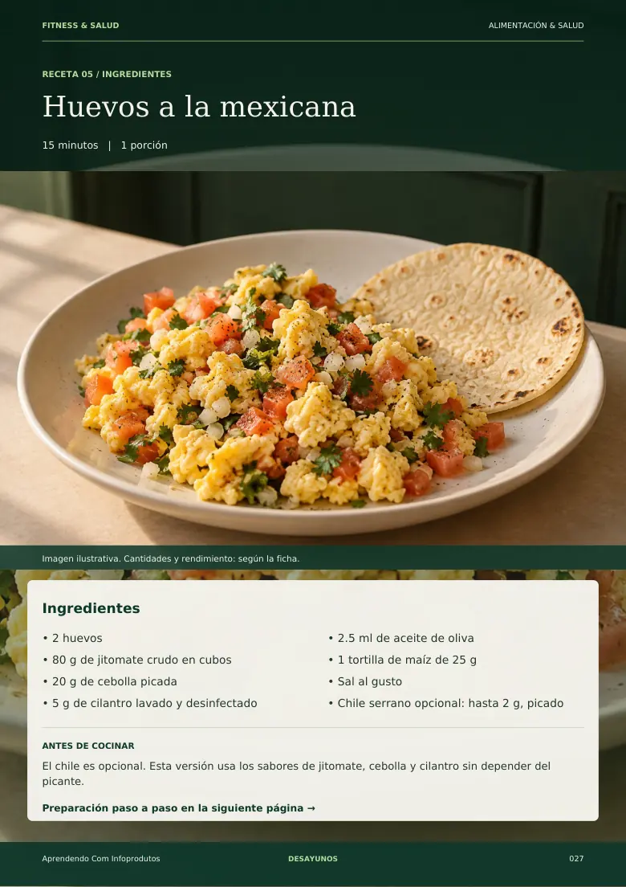
Sabores locales con pasos definidos.
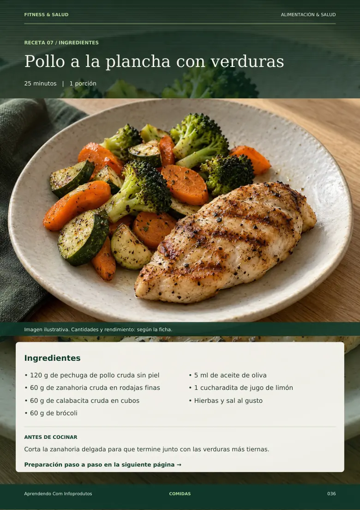
Verduras y preparación paso a paso.
Ingredientes tradicionales mexicanos.
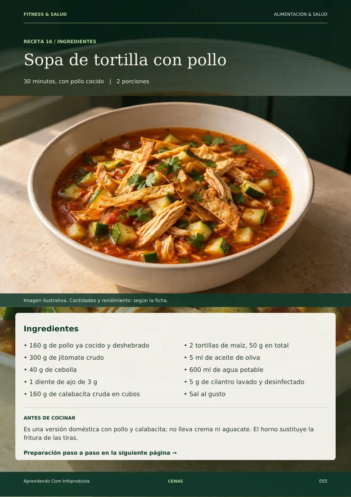
Una preparación cotidiana.
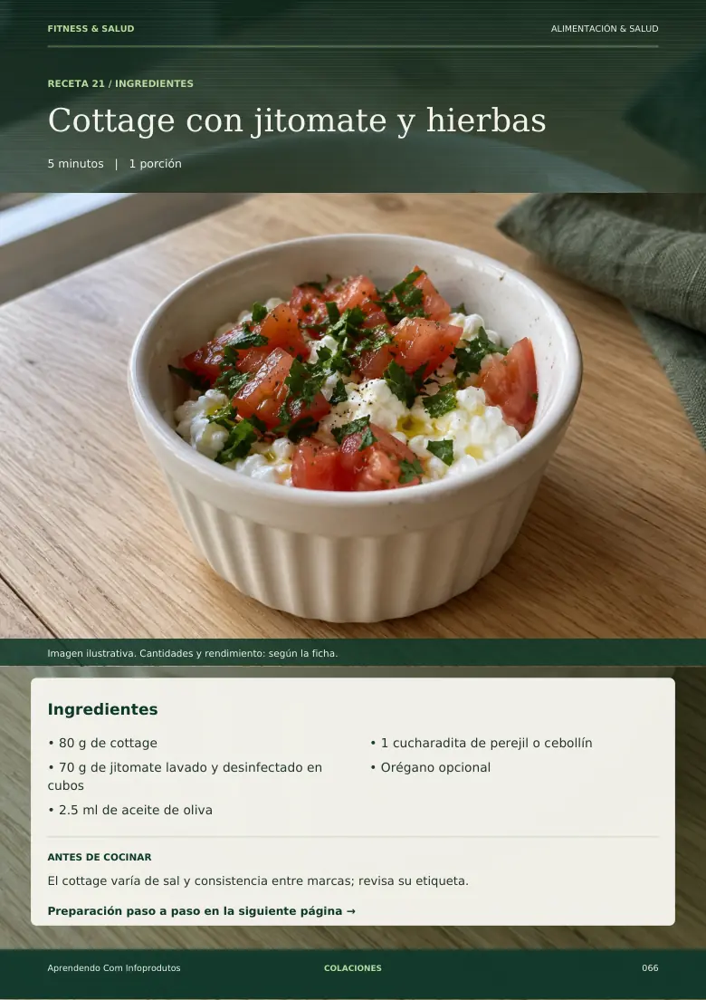
Alternativas para variar el menú.
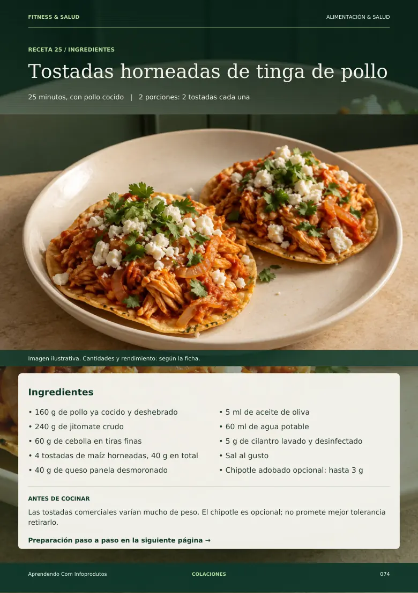
Adaptación culinaria mexicana.
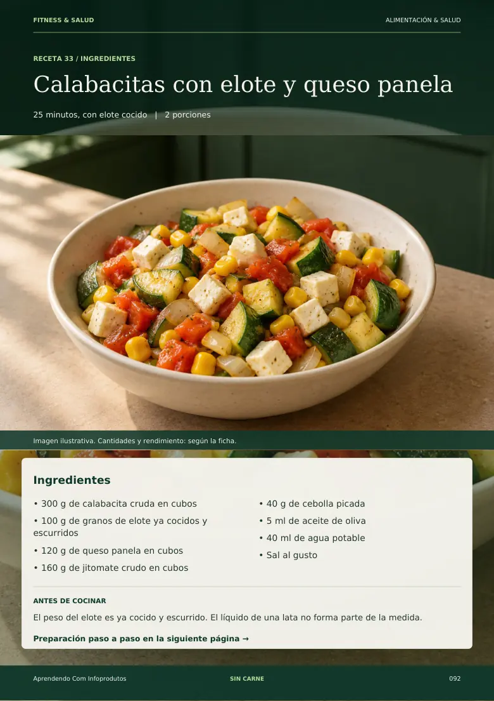
Variaciones con alimentos conocidos.
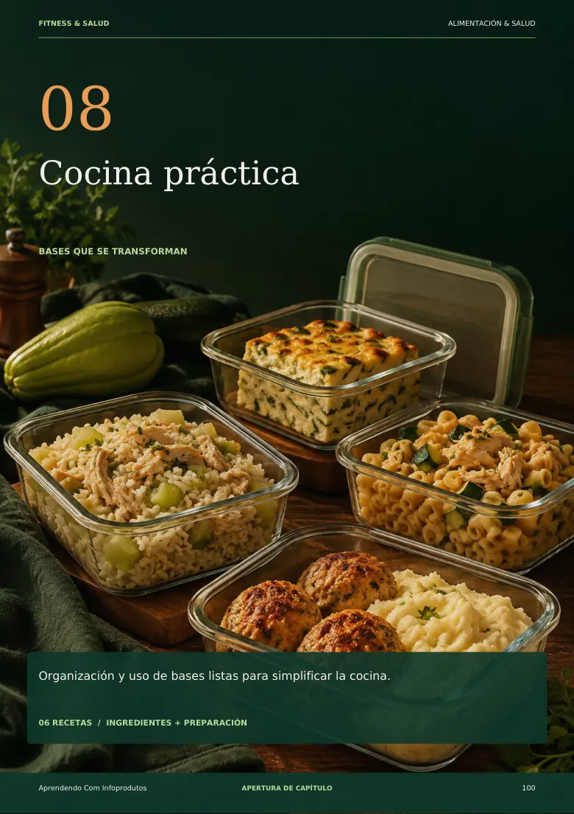
Recetas y bases que puedes aprovechar.
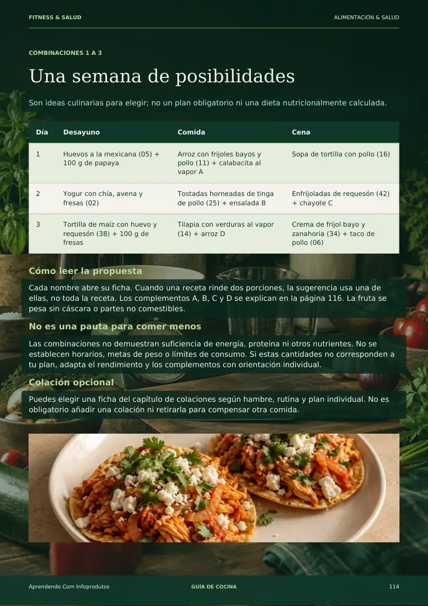
Propuestas flexibles para tu mesa.
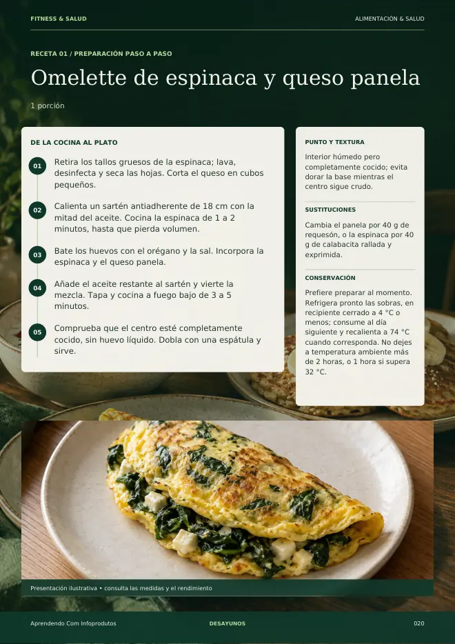
Explora desayunos, comidas, cenas, colaciones y preparaciones prácticas.
Cada ficha diferencia ingredientes e indica el rendimiento culinario.
Lee el orden de preparación, el punto de cocción y las sustituciones posibles.
Usa combinaciones y bases compartidas como ideas flexibles, no como dieta prescrita.
Organizadas en siete capítulos culinarios, con medidas y preparación detallada.
Desde huevos a la mexicana hasta pollo, pescado, sopas y verduras.
Ideas diferentes para elegir según preferencias y tolerancia individual.
Preparaciones con alimentos disponibles en México y opciones de sustitución.
Higiene, temperaturas de cocción, conservación y lista de ingredientes compartidos.
Propuestas de desayunos, comidas y cenas, más cuatro acompañamientos explicados.
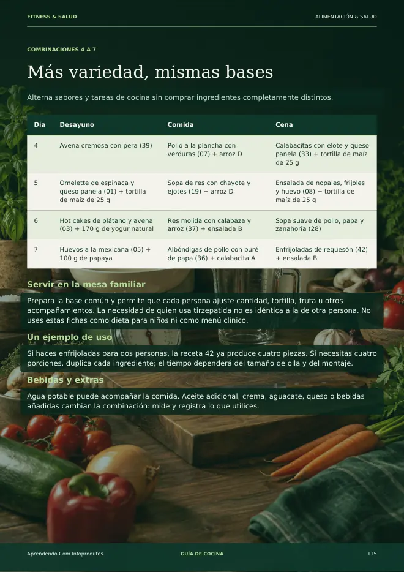
Las 44 recetas no equivalen a 44 menús completos. El libro incluye sugerencias culinarias para organizar una semana, sin calcular un plan nutricional individual.
Un recetario para quienes usan tirzepatida (Mounjaro), con platos familiares y pasos claros para consultar desde el celular o la computadora. Ajusta las recetas y porciones a tus necesidades con orientación profesional.
Pago único≈ $129 MXN
Precio de referencia aproximado en pesos mexicanos. Hotmart muestra el importe final, los impuestos aplicables y la moneda de cobro antes de confirmar el pago.
Comprar el recetario ↗Para personas adultas que usan tirzepatida (Mounjaro) con acompañamiento profesional y buscan ideas culinarias en español de México. No es una dieta personalizada ni una guía para iniciar, cambiar o suspender un medicamento.
No. Es una guía culinaria educativa. No prescribe dosis, calorías ni un plan de alimentación individual, y no reemplaza las indicaciones de tu médico o nutriólogo.
No existe una receta que garantice evitar síntomas. Cada persona puede tener una tolerancia distinta. Si tienes molestias persistentes, consulta a tu equipo de salud.
La edición usa alimentos y preparaciones familiares en México: jitomate, nopales, chayote, panela, enfrijoladas, tinga y tortillas de maíz, entre otros.
44 recetas ilustradas en un PDF de 119 páginas, además de información de uso, conservación y propuestas de combinaciones para siete días.
Las imágenes son ilustraciones digitales incluidas en el PDF original. El libro informa que sus preparaciones todavía requieren prueba culinaria y revisión profesional antes de presentarse como validadas.
El precio de referencia es de aproximadamente $129 MXN, en un solo pago. La conversión es orientativa: Hotmart mostrará el importe final y la moneda de cobro antes de confirmar la compra. Puedes comprar el recetario a través del checkout de Hotmart. El acceso al PDF se entrega después de que se apruebe el pago.
Explora páginas reales del recetario y conoce lo que incluye esta edición para México.
Comprar el recetario ↗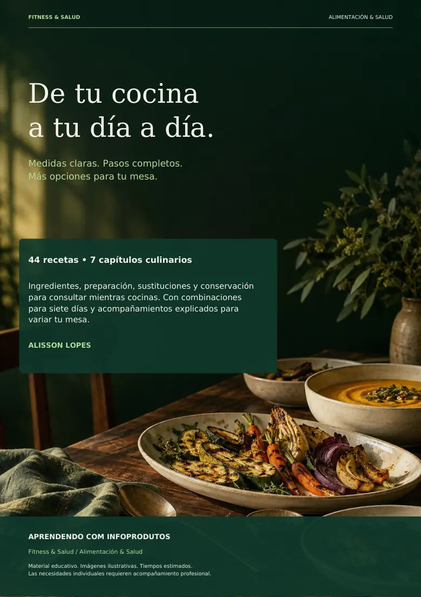